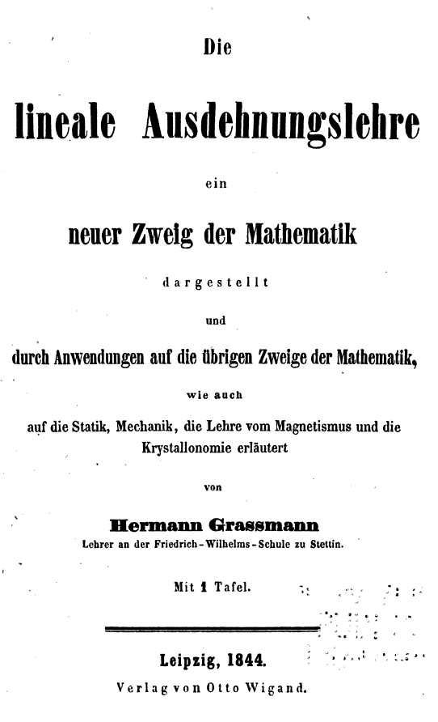
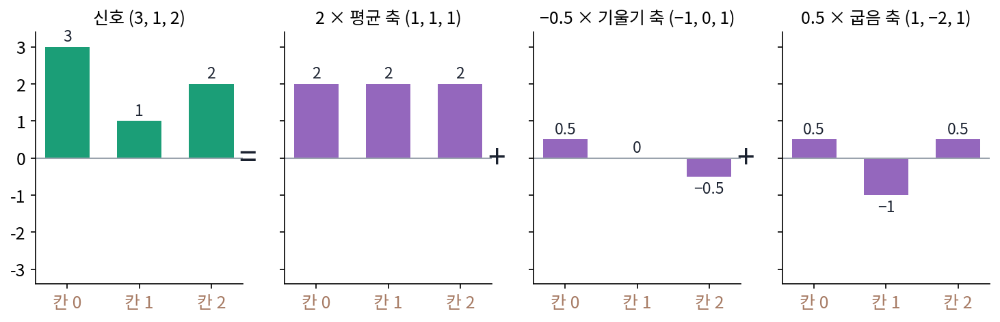

기저: 같은 정보를 다른 축으로 다시 적기
이 장의 물음
음악 앱의 이퀄라이저는 같은 노래를 낮은 소리, 가운데 소리, 높은 소리의 세기 막대로 보여 준다. 녹음 파일에 적힌 것은 흔히 1초에 4만 번 넘게 잰 공기 압력의 숫자 열인데, 막대 몇 개만 보고도 「저음이 센 노래」인지 알 수 있다. 숫자 열과 막대가 같은 노래를 적은 두 가지 방법이라면, 한 정보를 다른 숫자들로 다시 적는다는 것은 정확하게 무슨 일이고, 다시 적어도 잃는 것이 없으려면 무엇이 필요할까?
ML에서도 같은 물음이 생긴다. 언어 모델은 단어 하나를 숫자 수백 개짜리 벡터로 적는데(GPT-2 의 가장 작은 판은 768개), 몇 번째 칸이 무엇을 뜻하는지는 아무도 정하지 않았다. 그런데도 어텐션은 두 벡터의 칸끼리 곱해 더한 값으로 「얼마나 관련 있나」를 재고, 연구자들은 벡터에서 「긍정인가 부정인가」를 한 방향으로 읽어 낸다. 칸의 뜻을 모르는데 어떻게 그런 일이 될까?
이 장은 다음 물음에 차례로 답한다.
- 칸 세 개짜리 신호를 칸이 아닌 다른 세 방향으로 다시 적을 수 있을까? 어떤 방향 셋이면 될까?
- 다시 적을 때마다 연립방정식을 풀어야 할까? 더 쉬운 방법은 없을까?
- 다시 적은 숫자들에서 원래 신호의 크기를 그대로 읽을 수 있을까?
- 어떤 변환이 주어졌을 때, 그 변환을 가장 쉽게 만드는 방향은 어떻게 찾을까?
기저: 칸 세 개를 평균·기울기·굽음으로 다시 적기
사흘 동안 하루 한 번 잰 기온 변화를 숫자 셋 (3, 1, 2)로 적었다고 하자. 첫날 3, 둘째 날 1, 셋째 날 2처럼 칸마다 값을 하나씩 적는 것이 가장 흔한 방법이지만, 사람이 (3, 1, 2)를 보고 하는 말은 칸 단위가 아니다. 「대체로 2쯤이었다」, 「끝이 처음보다 조금 낮다」, 「가운데가 움푹 꺼졌다」처럼 평균, 기울기, 굽음으로 말한다. 사람이 말로 하는 이 세 가지를 숫자로 적을 수 있을까? 그리고 평균·기울기·굽음을 적은 숫자 셋만 있으면 원래 (3, 1, 2)를 되살릴 수 있을까?
역사: 아무도 읽지 않은 책
「같은 것을 여러 방향의 합으로 적는다」는 생각을 처음으로 일반적인 틀로 세운 사람은 대학 교수가 아니라 고등학교 교사였다. 슈테틴(지금의 폴란드 슈체친)의 학교에서 가르치던 그라스만(Hermann Grassmann)은 1844년 『선형 확장론(Die lineale Ausdehnungslehre)』을 냈다. 그는 점, 선분, 평면 조각을 수처럼 더하고 늘이는 계산을 만들었고, 그 안에서 지금 말로 「일차 독립」, 「생성」, 「차원」을 정의했다. 어떤 방향 묶음을 고르든 그 개수가 같다는 것, 다시 말해 차원은 고른 방향에 달려 있지 않다는 것도 증명했다.
책은 거의 읽히지 않았다. 당대 기하학의 대가 뫼비우스(August Ferdinand Möbius)는 서평을 써 달라는 부탁을 사양했다. 1847년 그라스만이 대학 자리를 얻으려 하자, 의견을 요청받은 쿰머(Ernst Kummer)는 그의 다른 논문을 두고 「칭찬할 만한 좋은 내용이 모자란 형식에 담겼다」고 평했고, 이 평가로 대학으로 갈 길은 막혔다. 그라스만은 1862년 같은 내용을 더 엄밀한 꼴로 다시 썼지만 반응은 나아지지 않았다. 그는 말년에 산스크리트어 연구로 방향을 돌렸고, 수학보다 언어학에서 먼저 인정받아 튀빙겐 대학의 명예 박사 학위를 받았다. 그가 정의한 방향 묶음의 성질이 공리로 정리된 것은 1888년 이탈리아의 페아노(Giuseppe Peano)가 그라스만의 책을 풀어 쓴 『그라스만의 확장론에 따른 기하 계산』에서였다. 그 정의는 지금의 선형대수 교과서와 거의 같다.

(3, 1, 2)를 세 축으로
평균, 기울기, 굽음을 각각 칸 세 개짜리 「본보기 모양」으로 만들어 보자.
- 평균 축 e₁ = (1, 1, 1): 세 칸이 모두 같다.
- 기울기 축 e₂ = (−1, 0, 1): 처음이 낮고 끝이 높다.
- 굽음 축 e₃ = (1, −2, 1): 양 끝이 높고 가운데가 꺼졌다.
(3, 1, 2)를 이 세 모양에 숫자를 곱해 더한 것, c₁(1, 1, 1) + c₂(−1, 0, 1) + c₃(1, −2, 1)로 적고 싶다. 칸마다 맞아야 하므로 식이 셋 생긴다.
- 칸 0: c₁ − c₂ + c₃ = 3
- 칸 1: c₁ − 2c₃ = 1
- 칸 2: c₁ + c₂ + c₃ = 2
칸 0과 칸 2의 식을 더하면 2c₁ + 2c₃ = 5, 빼면 2c₂ = −1이므로 c₂ = −0.5다. 칸 1의 식 c₁ = 1 + 2c₃ 를 2c₁ + 2c₃ = 5 에 넣으면 c₃ = 0.5, c₁ = 2가 된다. (3, 1, 2)는 「평균 2, 기울기 −0.5, 굽음 0.5」다. 기울기가 음수인 것은 끝(2)이 처음(3)보다 낮기 때문이고, 굽음이 양수인 것은 가운데(1)가 양 끝보다 꺼졌기 때문이다. 말로 하던 설명이 숫자 셋이 되었다.
거꾸로 숫자 셋에서 신호를 되살리면 2(1, 1, 1) − 0.5(−1, 0, 1) + 0.5(1, −2, 1) = (2, 2, 2) + (0.5, 0, −0.5) + (0.5, −1, 0.5) = (3, 1, 2)다. 잃은 것이 없다. 하루 종일 같은 값인 (2, 2, 2)는 같은 방법으로 풀면 「평균 2, 기울기 0, 굽음 0」이고, 고르게 오르는 (1, 2, 3)은 「평균 2, 기울기 1, 굽음 0」이다.

칸마다 값을 적던 원래 방법도 축에 계수를 곱해 더한 꼴이다. (3, 1, 2) = 3(1, 0, 0) + 1(0, 1, 0) + 2(0, 0, 1)이니, 칸마다 값을 적는 것은 「칸 0만 1인 모양」, 「칸 1만 1인 모양」, 「칸 2만 1인 모양」을 축으로 쓴 것이다. 축을 바꾸면 같은 신호가 다른 숫자 셋으로 적힌다. 이렇게 어떤 신호든 하나뿐인 계수로 적게 해 주는 축의 묶음을 기저 (축의 묶음 / basis)라 하고, 그 계수를 그 기저에서의 좌표라 한다. 칸 세 개짜리 신호에는 축이 셋 필요하고, 칸이 N개면 N개가 필요하다.
그러면 축은 아무렇게나 셋을 골라도 될까? 칸이 셋이고 축이 셋이면 늘 어떤 신호든 적을 수 있는지는 아래 문제 2에서 직접 따져 본다.
ML에서: 임베딩의 칸에는 이름이 없다
언어 모델의 임베딩 표는 단어마다 벡터 하나를 둔다. 학습은 이 벡터들의 칸 값을 손실이 줄어들도록 고칠 뿐, 「17번 칸은 성별, 302번 칸은 시제」처럼 칸의 뜻을 정해 두지 않는다. 그러니 임베딩 벡터에 적힌 숫자들은 학습이 우연히 쓰게 된 어떤 기저에서의 좌표다. 같은 단어 벡터들을 다른 기저로 다시 적어도 모델이 하는 일이 그대로인지, 그렇다면 「칸 하나를 들여다보고 뜻을 읽는 일」은 무엇을 놓치는지는 아래 문제 3에서 따진다.
문제 1. 편의점 세트 메뉴
편의점이 김밥·라면·음료를 묶어 세 가지 세트로만 판다. 풀세트는 (김밥 1, 라면 1, 음료 1), 김밥라면 세트는 (1, 1, 0), 김밥 단품은 (1, 0, 0)이다. (가) 김밥 4, 라면 3, 음료 1이 필요하면 세트를 몇 개씩 사야 하는가? (나) 김밥 3, 라면 1, 음료 2가 필요하면? (다) (나)의 답이 이상하다면 무엇이 이상하고, 그래도 계산은 맞는가? (위젯 1의 「문제 1 불러오기」로 확인해 보자.)

(가)는 음료가 1개니까 풀세트 1개요. 그럼 김밥 3, 라면 2가 남고, 라면은 김밥라면 세트에만 있으니까 2개, 남은 김밥 1은 단품이요. (1, 2, 1)이에요.

같은 방법으로 (나)도 해 볼까요?

음료 2개라 풀세트 2개, 그럼 라면이 벌써 2개인데 필요한 건 1개예요. 김밥라면 세트를 −1개 사야 하네요. 이건 못 사잖아요.

계산은 맞아. 풀세트 2, 김밥라면 −1, 김밥 단품 2를 더하면 (2 − 1 + 2, 2 − 1, 2) = (3, 1, 2)야. 좌표가 음수인 것뿐이야.

그래요. 세트로 「사는」 것은 좌표가 0 이상일 때만 되지만, 세 세트는 기저라서 어떤 주문이든 하나뿐인 좌표로 적혀요. 음수 좌표는 「세트 하나를 사고 그 안의 김밥과 라면을 하나씩 돌려준다」는 뜻으로 읽으면 돼요. 앞에서 (3, 1, 2)를 평균·기울기·굽음으로 적을 때도 기울기가 −0.5였죠.

과제 점수에서 지각 감점이 음수로 붙는 거랑 같네요. 항목은 그대로 두고 계수만 음수인 거예요.
문제 2. 축이 셋인데 기저가 아닐 때
평균 축 (1, 1, 1), 기울기 축 (−1, 0, 1) 에 셋째 축으로 (0, 1, 2) 를 골랐다. (가) (3, 1, 2) 를 이 세 축으로 적어 보라. (나) (2, 2, 2) 는 몇 가지 방법으로 적히는가? (다) 세 축이 기저가 되려면 어떤 조건이 필요한가? (위젯 1의 「문제 2 불러오기」)
연립방정식을 세우면 c₁ − c₂ = 3, c₁ + c₃ = 1, c₁ + c₂ + 2c₃ = 2예요. 첫째 식에서 c₂ = c₁ − 3을 셋째에 넣으면 2c₁ + 2c₃ = 5인데, 둘째 식은 c₁ + c₃ = 1이라 2c₁ + 2c₃ = 2여야 해요. 5 = 2라니, 제가 어디서 틀렸나요?
계산은 맞아요. (0, 1, 2) 를 앞의 두 축으로 만들 수 있는지 볼래요?

그냥 더해 보면 (1, 1, 1) + (−1, 0, 1) = (0, 1, 2)예요. 어, 셋째 축이 앞의 두 축의 합이에요. 새 방향을 하나도 안 보태네요.
그러면 세 축을 어떻게 섞어도 닿는 신호는 어디에 모여 있을까요?
앞의 두 축이 만드는 평면 위요. 셋째 축도 그 평면에 누워 있으니까요.

(3, 1, 2)가 그 평면 밖인지는 어떻게 알아?
두 축에 공통으로 맞는 식을 찾으면 돼. (1, 1, 1)도 (−1, 0, 1)도 x[0] − 2x[1] + x[2]가 0이야. 그런데 (3, 1, 2)는 3 − 2 + 2 = 3이라 평면 밖이고, 그래서 어떤 계수로도 안 돼.

(나)는 (2, 2, 2)가 2 − 4 + 2 = 0이라 평면 안이네요. 2(1, 1, 1)도 되고, 0(1, 1, 1) − 2(−1, 0, 1) + 2(0, 1, 2)도 돼요. 셋째 축이 앞의 두 축의 합이라 얼마든지 바꿔 쓸 수 있으니 방법이 끝없이 많아요.

그러면 기저의 조건을 말해 볼까요? 적을 수 없는 신호가 있어도 안 되고, 적는 법이 여럿이어도 안 되죠.
이번 셋째 축은 앞의 두 축으로 만들어져서 탈이 났으니까, 어느 축도 나머지 축을 섞어서 만들어지지 않아야 해요. 그걸 일차 독립이라고 하죠.
그럼 칸이 세 개일 때 그런 축을 넷 고를 수 있을까요? 둘만 고르면요?

둘이면 방금처럼 평면 하나만 덮어서 다 못 적어요. 넷은… 칸 수를 넘을 수는 없을 것 같아요. 그러면 칸이 세 개일 때 일차 독립인 축 셋이 기저예요. 그라스만이 차원은 고른 축에 달려 있지 않다고 증명한 것도 이 얘기였네요.

선형대수 시간에 행렬식이 0이면 역행렬이 없다고 외웠는데, 그게 축이 한 평면에 누웠다는 뜻이었어.
문제 3. 임베딩을 90° 돌리면
칸 두 개짜리 단어 벡터가 고양이 (1.0, 0.2), 강아지 (0.9, 0.4), 자동차 (−0.3, 1.0), 기차 (−0.5, 0.9) 이고, 다음 층은 무게 w = (1, −1) 과의 내적으로 「동물다움 점수」를 낸다. (가) 네 단어의 점수를 구하라. (나) 단어 벡터를 모두 원점 둘레로 90° 돌려(칸 값 (a, b) → (−b, a)) 학습을 다시 했다면, 무게를 어떻게 바꿔야 같은 점수가 나오는가? (다) 누군가 원래 표를 보고 「첫째 칸이 동물이면 양수, 탈것이면 음수인 칸」이라고 했다. 돌린 표에서도 그 말이 맞는가?
(가)는 1.0 − 0.2 = 0.8, 0.9 − 0.4 = 0.5, −0.3 − 1.0 = −1.3, −0.5 − 0.9 = −1.4예요. 동물이 양수, 탈것이 음수로 잘 갈려요.
(나)는 무게를 그대로 둬도 되지 않을까요? 벡터를 돌려도 단어 사이의 거리와 각은 그대로니까 정보는 똑같잖아요.
민준 학생, 돌린 고양이 (−0.2, 1.0)에 그대로 (1, −1)을 내적해 볼래요?
−0.2 − 1.0 = −1.2요. 고양이가 탈것처럼 나와요.
벡터만 돌아가고 무게는 제자리에 있었네요. 그럼 무게는 어떻게 하면 될까요?
무게도 같이 돌려야 하는구나. (1, −1)을 90° 돌리면 (1, 1)이고, (−0.2, 1.0)·(1, 1) = 0.8이에요. 네 단어 다 원래 점수랑 같아요.
둘 다 같은 각만큼 돌면 둘 사이의 각과 길이가 그대로니까 내적이 안 변하는 거야. 고양이와 강아지의 내적도 돌리기 전과 후 모두 0.98이고.
그럼 (다)의 「첫째 칸이 동물 칸」이라는 말을 돌린 표로 시험해 볼까요? 돌린 표의 첫째 칸 값 넷을 읽어 봐요.
돌린 표의 첫째 칸은 −0.2, −0.4, −1.0, −0.9로 넷 다 음수예요. 첫째 칸만 보면 동물과 탈것이 안 갈려요. 그런데 모델의 점수는 똑같잖아요. 이상한데요.
그럼 동물 칸이 돌리면서 어디로 간 거야?

처음부터 칸 하나에 있던 게 아니었나 봐. 점수를 낸 건 무게 (1, −1)이니까 「동물다움」은 그 방향에 있었던 거고, 원래 표에서 그 방향이 우연히 첫째 칸과 가까웠을 뿐이에요.
그래요. 학습된 벡터에서 뜻을 찾으려면 칸이 아니라 방향을 봐야 해요. 방향 하나를 어떻게 읽어 내는지는 내적과 사영을 배우면서 다시 봐요.

조별 과제 점수표를 조교님이 항목 순서만 바꿔서 다시 줬는데 제 총점은 똑같았던 거랑 비슷하네요. 칸 번호에는 뜻이 없고 무엇을 어떻게 더하느냐가 중요한 거예요.